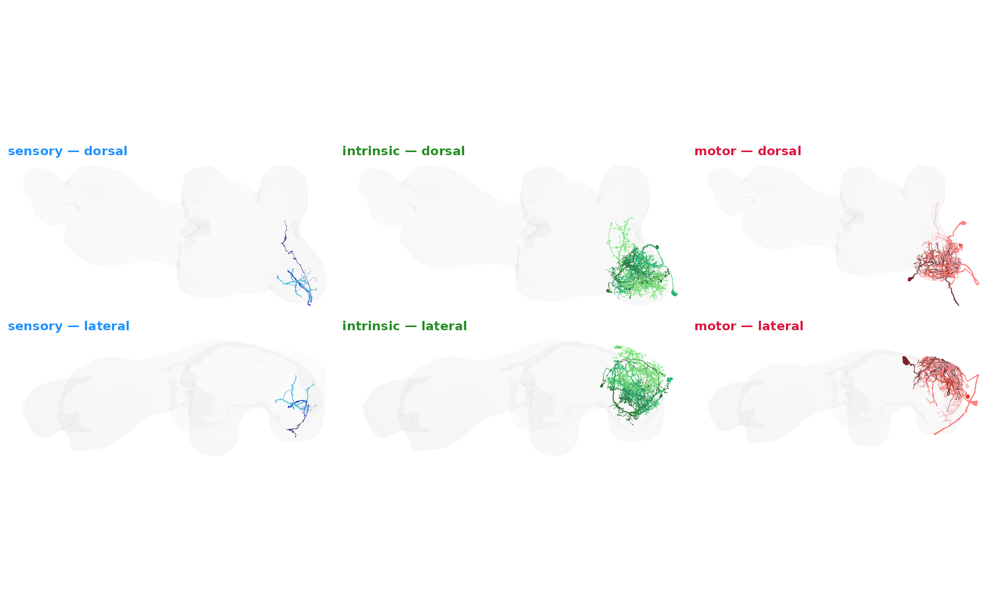

Front-leg sensorimotor loops
Source:vignettes/articles/front_leg_sensorimotor.Rmd
front_leg_sensorimotor.RmdA central claim of the BANC paper (Bates et al. 2026, Nature) is that motor control in Drosophila is distributed — many behaviours are not orchestrated by a single brain command followed by passive execution in the ventral nerve cord (VNC), but instead emerge from local sensorimotor loops embedded inside individual VNC neuromeres, coordinated by ascending and descending pathways.
The front-leg neuromere (T1) is a convenient place to see one of
those loops by eye: the leg’s mechanosensory afferents enter through the
front-leg nerve, the motor neurons that drive the leg muscles exit
through the same nerve, and a population of small VNC intrinsic neurons
(the “single-leg-neuromere” cell class) sits between them. In this
article we use bancr to identify those intrinsic neurons by
the purely connectomic criterion of being monosynaptic between left
front-leg sensory neurons and left front-leg motor neurons, then
build a public Neuroglancer scene that shows the three groups
colour-coded.
Everything below runs against public BANC resources: annotations come
from the public GCS snapshot (no authentication required), and synaptic
connectivity comes from the read-only public CAVE datastack
brain_and_nerve_cord_public.
Setup
Even though every step below runs against public BANC
resources, CAVE still requires a personal token tied to your Google
account before any of its endpoints will answer. If you haven’t set one
up yet, run banc_set_token() once — it opens a browser,
signs you in via Google, and stashes the token for future sessions. The
bancr
README walks through the full setup. No production-access grant is
needed to follow this article; the token alone is enough.
Load the codex annotation table
banc_codex_annotations() returns a per-neuron pivot of
the BANC codex annotation table — the same one displayed at https://codex.flywire.ai/?dataset=banc. By default it
reads from a cached public GCS snapshot, so this first call needs no
CAVE token.
codex <- banc_codex_annotations()Select left-front-leg sensory and motor pools
The codex carries the BANC annotation hierarchy
(super_class, cell_class,
cell_sub_class, cell_type) plus laterality
(side), the sensed body part
(body_part_sensory) and the motor target
(body_part_effector). We filter to neurons whose receptive
or motor field is the left front leg.
Find intrinsic neurons that close the loop
To be on the loop, an intrinsic neuron must receive direct input from
at least one of the sensory neurons and send direct output to
at least one of the motor neurons. We use
banc_partner_summary() to pull the monosynaptic partner
lists, one row per (query neuron → partner) edge.
version = 888 pins the call to the most recent
materialisation exposed by the public datastack. We deliberately pass
threshold = 0 so the partners step keeps every candidate
edge; the cell-class and side filters below do the tightening.
sensory_out <- banc_partner_summary(
sensory$pt_root_id,
partners = "outputs",
threshold = 0,
version = 888
)
motor_in <- banc_partner_summary(
motor$pt_root_id,
partners = "inputs",
threshold = 0,
version = 888
)
candidates <- intersect(
as.character(sensory_out$post_id),
as.character(motor_in$pre_id)
)
length(candidates)
#> [1] 2229The intersection of “downstream of any sensory neuron” and “upstream
of any motor neuron” is still loose — it includes brain interneurons,
contralateral pathways and projection neurons that just happen to touch
both ends. We tighten to a clean local-circuit population by restricting
to the single_leg_neuromere cell class on the same (left)
side.
intrinsic <- codex %>%
filter(
as.character(pt_root_id) %in% candidates,
cell_class == "single_leg_neuromere",
side == "left"
)
nrow(intrinsic)
#> [1] 255A quick breakdown by cell_sub_class gives a sense of the
sub-populations involved:
intrinsic %>%
count(cell_sub_class, sort = TRUE) %>%
head(10)
#> # A tibble: 4 × 2
#> cell_sub_class n
#> <chr> <int>
#> 1 ventral_nerve_cord_ipsilateral_restricted 231
#> 2 ventral_nerve_cord_bilateral_restricted 15
#> 3 ventral_nerve_cord_bilateral_interconnecting 6
#> 4 ventral_nerve_cord_ipsilateral_interconnecting 3Render a sample of the loop in BANC space
Before we build the full interactive scene, here’s a quick static look at the geometry. We sample a handful of neurons per group, pull their meshes from the public BANC bucket, decapitate them at the neck connective to keep only the VNC portion, and lay out a 3 × 2 grid: one column per group (sensory, intrinsic, motor), one row per view (VNC dorsal, VNC lateral). Each group has its own colour ramp (blues / greens / reds) with within-group jitter so individual neurons remain visually separable.
library(ggplot2)
library(patchwork)
set.seed(1)
sample_ids <- list(
sensory = sample(sensory$pt_root_id, 4),
intrinsic = sample(intrinsic$pt_root_id, 4),
motor = sample(motor$pt_root_id, 4)
)
sens_m <- banc_read_neuron_meshes(sample_ids$sensory)
#> Warning: deduplication not currently supported for this layer's variable layered draco meshes
#> Warning: deduplication not currently supported for this layer's variable layered draco meshes
#> Warning: deduplication not currently supported for this layer's variable layered draco meshes
#> Warning: deduplication not currently supported for this layer's variable layered draco meshes
intr_m <- banc_read_neuron_meshes(sample_ids$intrinsic)
#> Warning: deduplication not currently supported for this layer's variable layered draco meshes
#> Warning: deduplication not currently supported for this layer's variable layered draco meshes
#> Warning: deduplication not currently supported for this layer's variable layered draco meshes
#> Warning: deduplication not currently supported for this layer's variable layered draco meshes
mot_m <- banc_read_neuron_meshes(sample_ids$motor)
#> Warning: deduplication not currently supported for this layer's variable layered draco meshes
#> Warning: deduplication not currently supported for this layer's variable layered draco meshes
#> Warning: deduplication not currently supported for this layer's variable layered draco meshes
#> Warning: deduplication not currently supported for this layer's variable layered draco meshes
# Per-group colour ramps (same families banc_neuron_comparison_plot
# uses, expanded across the N neurons per group so they stay
# visually distinct).
pal_sensory <- grDevices::colorRampPalette(
c("#00008B","#0000CD","#4169E1","#1E90FF","#87CEEB","#B0E0E6"))
pal_intrinsic <- grDevices::colorRampPalette(
c("#006400","#076b3e","#228B22","#32c080","#90EE90"))
pal_motor <- grDevices::colorRampPalette(
c("#8f0723","#DC143C","#FF4500","#FF7F50","#F88379","#FFB6C1"))
make_panel <- function(neurons, view, palette, label, label_colour) {
rotation <- banc_rotation_matrices[[view]]
ggplot() +
nat.ggplot::geom_neuron(
x = bancr::banc_vnc_neuropil.surf,
rotation_matrix = rotation,
alpha = 0.05, cols = c("grey90", "grey60")
) +
nat.ggplot::geom_neuron(
x = banc_decapitate(neurons, invert = FALSE),
rotation_matrix = rotation,
cols = palette(length(neurons)),
alpha = 0.85, linewidth = 0.3
) +
coord_fixed() +
theme_void() +
ggtitle(label) +
theme(
plot.title = element_text(hjust = 0, size = 9,
face = "bold", colour = label_colour),
legend.position = "none"
)
}
groups <- list(
sensory = list(neurons = sens_m, palette = pal_sensory, colour = "#1E90FF"),
intrinsic = list(neurons = intr_m, palette = pal_intrinsic, colour = "#228B22"),
motor = list(neurons = mot_m, palette = pal_motor, colour = "#DC143C")
)
views <- c(dorsal = "vnc", lateral = "vnc_side")
panels <- list()
for (v in names(views)) {
for (g in names(groups)) {
panels[[paste(v, g, sep = "_")]] <- make_panel(
groups[[g]]$neurons,
views[[v]],
groups[[g]]$palette,
sprintf("%s — %s", g, v),
groups[[g]]$colour
)
}
}
patchwork::wrap_plots(panels, ncol = 3)
The motor and intrinsic arbours hug the left T1 neuromere, and the sensory afferents enter through the front-leg nerve and ramify in the same volume — exactly the local-loop geometry the BANC paper emphasises.
Render the loop as a public Neuroglancer scene
banc_scene() returns the canonical public BANC
Neuroglancer state. We decode it, set the segmentation-proofreading
layer’s segment list to the union of our three pools, colour each id by
its super_class, and shorten the resulting URL via
banc_shorturl().
# Group → colour map (colour-blind-safe Okabe-Ito palette)
group_colours <- c(
sensory = "#0072B2", # blue
intrinsic = "#009E73", # green
motor = "#D55E00" # vermillion
)
# One row per neuron with its id and group colour
colourdf <- bind_rows(
data.frame(ids = as.character(sensory$pt_root_id),
col = group_colours[["sensory"]]),
data.frame(ids = as.character(intrinsic$pt_root_id),
col = group_colours[["intrinsic"]]),
data.frame(ids = as.character(motor$pt_root_id),
col = group_colours[["motor"]])
)
# Build the scene: load the base public BANC state, install the
# segment list on the proofreading layer, then layer the colour map
# on top. The base scene archives the proofreading layer and selects
# "BANC static" by default — flip both so the reader opens the link
# straight onto our coloured neurons.
sc <- fafbseg::ngl_decode_scene(banc_scene())
layer_idx <- match("segmentation proofreading",
sapply(sc$layers, `[[`, "name"))
sc$layers[[layer_idx]]$segments <- colourdf$ids
sc$layers[[layer_idx]]$archived <- FALSE
sc$selectedLayer <- list(visible = TRUE,
layer = "segmentation proofreading")
scene_url <- fafbseg::ngl_add_colours(
as.character(sc),
colourdf,
layer = "segmentation proofreading"
)
short_url <- banc_shorturl(scene_url)
short_url
#> [1] "https://spelunker.cave-explorer.org/#!middleauth+https://global.daf-apis.com/nglstate/api/v1/6577367509106688"Open the front-leg sensorimotor scene in Spelunker
The Neuroglancer scene shows the 836 sensory neurons in blue, the 255 single-leg-neuromere intrinsic neurons in green, and the 69 motor neurons in vermillion. Switching on a neuropil overlay makes it obvious that the whole loop sits inside the T1 left neuromere — exactly the local sensorimotor module the BANC paper highlights.
Exporting the loop for downstream analysis
A common follow-up is to share the full list of root IDs and their annotations with collaborators (e.g. for proofreading, for matching against another connectome, or for use in a non-R workflow). The analysis output is a single tidy data frame — bind the three pools, keep the annotation columns you care about, and write to CSV.
loop_selection <- dplyr::bind_rows(
sensory |> dplyr::mutate(group = "sensory"),
intrinsic |> dplyr::mutate(group = "intrinsic"),
motor |> dplyr::mutate(group = "motor")
) |>
dplyr::select(
group, pt_root_id,
super_class, cell_class, cell_sub_class, cell_type,
side, body_part_sensory, body_part_effector,
nerve, hemilineage
)
write.csv(loop_selection,
file = "~/Downloads/front_leg_sensorimotor_loop.csv",
row.names = FALSE)What next
This is a single, manually-defined slice of the distributed-control
architecture characterised in Bates et al. 2025. The same recipe — a
codex filter for the two endpoints, a partners-API intersection, a
cell-class filter for the intrinsic pool — extends naturally to other
body parts (body_part_sensory /
body_part_effector), other sides, and other intrinsic cell
classes (sequential_leg_neuromeres,
intrasegmental, …). For whole-CNS analyses, swap the
per-query banc_partner_summary() calls for the precomputed
banc_edgelist() / banc_edgelist_split()
snapshots (also public, also GCS-backed) and join against the codex
table in dplyr.